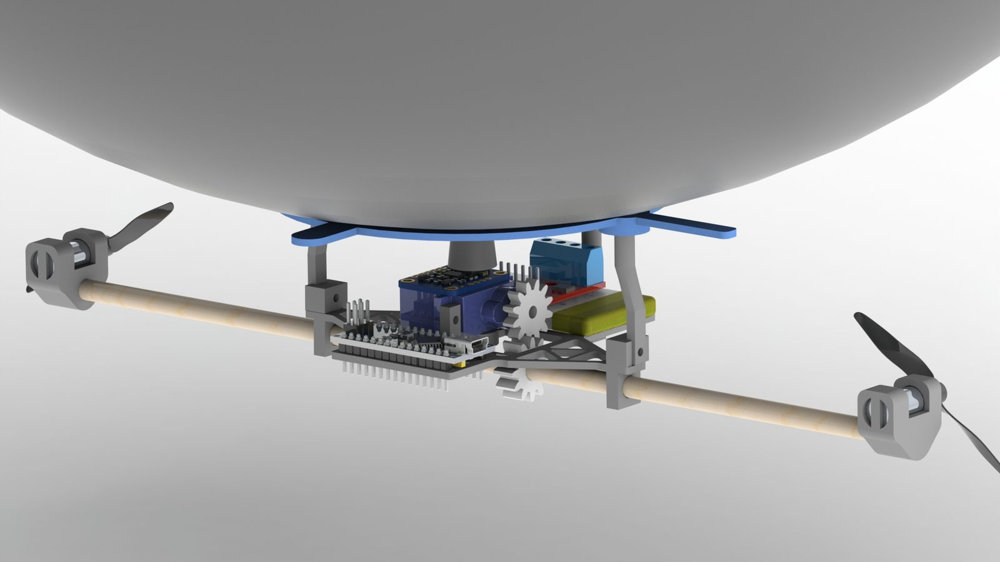
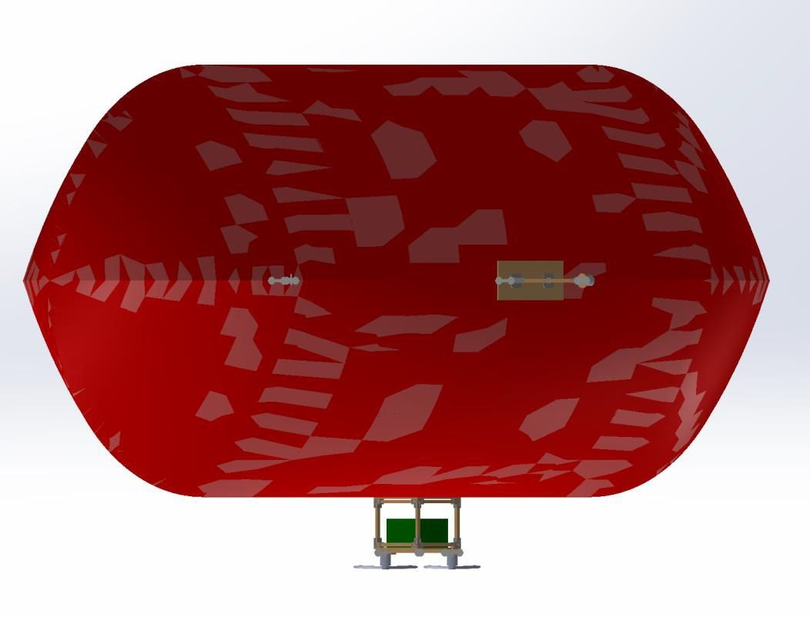
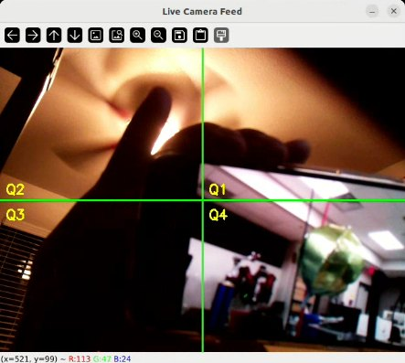

AeroFusion: An Autonomous Blimp, from Custom Airframe to Vision Autonomy
Nihar, Tatwik and I set out to build a blimp that could find a balloon, follow it and fly up to it with nobody at the controls. A YOLOv5 detector feeds PI control based on which quadrant of the image the balloon is in, a Kalman filter fuses a 200 Hz IMU with barometric altitude, and a pseudo-inverse motor map splits the thrust between motors, all running on a Raspberry Pi on board. It started as our three-person course project. It then became the AMASS Lab's Defend-the-Republic competition platform, where I now lead the software.

It flies slower than a drone and has to think harder than a balloon.
The question our team asked was how much sensor fusion can improve control and tracking for a hybrid robotic blimp when the air around it keeps moving. A blimp is a frustrating thing to control. Buoyancy dominates, it's underactuated, drafts a quadcopter would never notice push it around, and its motors barely have any authority. We borrowed the mission from the Defend-the-Republic competition: spot a balloon on its own, steer toward it and capture it, with every sensor reading and every inference happening on board.
That one rule shaped every decision. There was no motion capture to lean on and no GPU on the ground. A Raspberry Pi, a camera, an IMU and a barometer had to handle detection, state estimation and control all at once, in real time.
Every gram had to earn its place.
We designed the airframe ourselves in SolidWorks: an ellipsoid helium envelope with a 3D-printed gondola of foam and balsa hanging at the center of gravity. On board there's a Raspberry Pi 4B (8 GB) on a custom power distribution PCB, a BNO085 IMU at 200 Hz, a BMP390 barometer at 50 Hz for altitude, and a Pi Camera v2 streaming 640×480 at 30 fps. Two side motors push against each other to turn, a vertical thruster handles up and down, and the ESCs run on 50 Hz PWM. The whole thing lives off one 7.4 V, 900 mAh LiPo.

Sensing, fusing, deciding and moving, fifty times a second.
ψcmd = Kp,ψ·eu + Ki,ψ·∫eu dt yaw PI driven by vision
fz = Kp,z·ez + Ki,z·∫ez dt altitude PI from the barometer
u = T†( Fdesired − Fbuoyancy ) pseudo-inverse thrust allocation into four PWM signals
The ROS 2 stack comes in layers. The sensor layer publishes three streams that don't line up in time: the IMU at 200 Hz, the barometer at 50 Hz and detections at roughly 30 fps. In the estimation layer a Kalman filter fuses them into a 12-dimensional state, the 6-DoF pose plus linear and angular velocities, which recovers the rates no sensor measures directly. The control layer runs the PI loops above, and the actuation layer turns the forces we want into individual motor commands through the pseudo-inverse of the thrust allocation matrix, clipped to what the ESCs accept. A mode switcher decides between joystick control, full autonomy and safety overrides. If the detector loses the balloon, the blimp holds its altitude and stops turning until it finds it again. We'd rather it hover than guess.
Knowing the quadrant turned out to be enough.
We trained a YOLOv5s model on our own balloon dataset and quantized it to 8-bit so it could run on the CPU. It reached about 96% mAP@0.5, taking around 20 ms a frame on a GPU and under 100 ms on the CPU. Instead of estimating where the target is in 3D, the blimp just uses the center of the detection box. The image is split into four quadrants with a small dead zone in the middle, and each region maps to an obvious pair of commands.
| Region | Centroid | Yaw command | Vertical command |
|---|---|---|---|
| Q1 · Northeast | u>320, v<240 | Right | Climb |
| Q2 · Northwest | u<320, v<240 | Left | Climb |
| Q3 · Southeast | u>320, v>240 | Right | Descend |
| Q4 · Southwest | u<320, v>240 | Left | Descend |
| Center | |u−320|<ε, |v−240|<ε | Hold | Hold altitude |
Detections under 0.5 confidence are thrown out. A box that gets too big triggers a safety retreat, because it means the balloon is about to hit the lens.

A blimp is basically an underwater vehicle that got lucky.
When buoyancy does most of the lifting, quadrotor models don't fit. So we derived a full 6-DoF lighter-than-air model instead. The mass and inertia come out of the CAD, the added mass terms come from Lamb's k-factors for an ellipsoid, and on top of that sit the Coriolis, damping, and gravity and buoyancy restoring terms. To check it, we ran single-axis thrust tests under Vicon motion capture. The predicted and measured trajectories line up for both forward and vertical motion, which confirmed that a lighter-than-air vehicle follows the same structure as an underwater one, with buoyancy doing the job water normally does.


The class project that kept going.
The blimp didn't end with the semester. It became the AMASS Lab's Defend-the-Republic competition platform, and a ten-person team now builds on the stack. I own the software architecture and integration and do most of the code review. We also published a 51-page technical handoff so anyone can pick it up. It walks through bringing the system up from a clean OS image, lists the full mechanical and electronics BOMs, maps out the wiring and pins, and records system acceptance tests with clear pass criteria and saved evidence, meaning logs, plots and videos tied to specific commits.
| Acceptance test | Procedure | Pass criteria |
|---|---|---|
| Hover stability | 60 s hover at 0.5 m | altitude std dev < 0.1 m, drift < 0.2 m |
| Quadrant detection | 10 trials per quadrant | >90% detection accuracy |
| Cage-gate actuation | 20 open/close cycles | 100% success, < 2 s actuation |
| Vision autonomy | tethered approach, target at about 2 m | lock < 15 s, altitude within 0.3 m, hold ≥ 5 s |
Taken from the acceptance test record in the platform report (release tag platform_report_2026_02), with the evidence saved for each commit.
What I took away from it.
On a blimp, autonomy has a physical budget. Choosing YOLOv5s over a bigger model, quadrants over 3D estimation, and an IMU with a barometer instead of GPS each gave up some capability to save grams, milliseconds and milliamps, and it flew because we made those trades with our eyes open. Fusion is what lets cheap sensors punch above their weight. None of the sensors on board could locate the blimp alone, but together through the Kalman filter they kept a lock on a moving target. And a platform can outlast the project it came from. The documentation, the acceptance tests and a clean handoff are what turned one semester's build into a competition program the lab is still running.